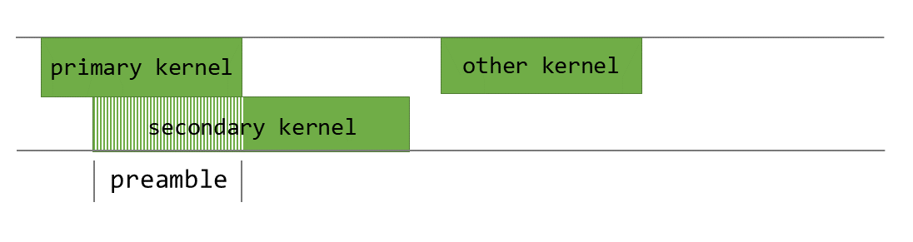

프로그래밍 방식 종속 런치(Programmatic Dependent Launch) 메커니즘은 동일한 CUDA 스트림에서 의존 대상인 기본(primary) 커널의 실행이 끝나기 전에, 의존하는 보조(secondary) 커널이 실행을 시작할 수 있도록 합니다. 이 기법은 컴퓨트 기능(Compute Capability) 9.0 디바이스부터 사용할 수 있으며, 보조 커널이 기본 커널의 결과에 의존하지 않는 상당한 작업을 미리 처리할 수 있을 때 성능상 이점을 제공합니다.
4.5.1. 배경#
CUDA 애플리케이션은 여러 커널을 GPU에서 실행되도록 런치하고 실행함으로써 GPU를 활용합니다. 전형적인 GPU 활동 타임라인은 그림 39에 나와 있습니다.

그림 39 GPU 활동 타임라인#
여기서 secondary_kernel은(는) primary_kernel이(가) 실행을 완료한 뒤에 실행됩니다.
직렬화된 실행은 보통 필요합니다. 이는 secondary_kernel이(가)
primary_kernel에 의해 생성된 결과 데이터에 의존하기 때문입니다. secondary_kernel이(가) primary_kernel에 대한 의존성이 없다면,
CUDA 스트림을(를) 사용하여 둘 다 동시에 실행되도록(동시 실행으로) 실행할 수 있습니다.
secondary_kernel이(가) primary_kernel에 의존하더라도, 동시 실행에 대한 잠재력은 어느 정도 존재합니다.
예를 들어, 거의 모든 커널에는 버퍼를 0으로 초기화하거나 상수 값을 로드하는 등의 작업이 수행되는
일종의 프리앰블(preamble) 섹션이 있습니다.

그림 40 secondary_kernel의 프리앰블 섹션#
그림 40은 애플리케이션의 의미를 바꾸지 않으면서도 secondary_kernel에서 동시에 실행할 수 있는 부분을 보여줍니다. 또한 이런 동시 실행은 secondary_kernel의 런치 지연 시간을 primary_kernel 실행 뒤에 숨길 수 있다는 점도 중요합니다.
{kind=link}

그림 41 동시 실행은 primary_kernel 및 secondary_kernel#
그림 41에 나타난 secondary_kernel의 겹친 실행은 프로그래밍 방식 종속 런치를 사용해 달성할 수 있습니다.
프로그래밍 방식 종속 런치(Programmatic Dependent Launch)는 다음 섹션에서 설명하듯 CUDA 커널 실행 API에 몇 가지 변경을 도입합니다. 이러한 API는 중첩 실행을 제공하기 위해 최소 컴퓨트 기능(Compute Capability) 9.0이 필요합니다.
4.5.2. API 설명#
프로그래밍 방식 종속 실행에서 기본 커널과 보조 커널은 동일한 CUDA 스트림에서 실행됩니다.
기본 커널은 보조 커널이 실행될 준비가 되었을 때 모든 스레드 블록에서 cudaTriggerProgrammaticLaunchCompletion 를 실행해야 합니다. 보조 커널은 표시된 대로 확장 가능한 실행 API를 사용하여 실행되어야 합니다.
__global__ void primary_kernel() {
// Initial work that should finish before starting secondary kernel
// Trigger the secondary kernel
cudaTriggerProgrammaticLaunchCompletion();
// Work that can coincide with the secondary kernel
}
__global__ void secondary_kernel()
{
// Independent work
// Will block until all primary kernels the secondary kernel is dependent on have completed and flushed results to global memory
cudaGridDependencySynchronize();
// Dependent work
}
cudaLaunchAttribute attribute[1];
attribute[0].id = cudaLaunchAttributeProgrammaticStreamSerialization;
attribute[0].val.programmaticStreamSerializationAllowed = 1;
configSecondary.attrs = attribute;
configSecondary.numAttrs = 1;
primary_kernel<<<grid_dim, block_dim, 0, stream>>>();
cudaLaunchKernelEx(&configSecondary, secondary_kernel);
보조 커널이 cudaLaunchAttributeProgrammaticStreamSerialization 속성을 사용하여 실행되면,
CUDA 드라이버는 보조 커널을 조기에 실행해도 안전하며, 보조 커널을 실행하기 전에 기본 커널의 완료 및 메모리 플러시를 기다리지 않아도 됩니다.
CUDA 드라이버는 모든 기본 스레드 블록이 실행을 시작하고
cudaTriggerProgrammaticLaunchCompletion 를 실행했을 때 보조 커널을 실행할 수 있습니다.
기본 커널이 트리거를 실행하지 않으면, 기본 커널의 모든 스레드 블록이 종료된 후 암묵적으로 발생합니다.
어느 경우든 보조 스레드 블록은
기본 커널이 기록한 데이터가 가시화되기 전에 실행될 수 있습니다. 따라서 보조 커널이 프로그래밍 방식 종속 실행으로 구성된 경우,
항상 cudaGridDependencySynchronize
또는 다른 수단을 사용하여 기본 커널의 결과 데이터가 사용 가능함을 확인해야 합니다.
이러한 방법은 기본 커널과 보조 커널이 동시에 실행될 기회를 제공하지만, 이 동작은 기회주의적(opportunistic)이며 동시 커널 실행으로 이어지는 것이 보장되지 않습니다. 이러한 방식의 동시 실행에 의존하는 것은 안전하지 않으며 데드락으로 이어질 수 있습니다.
4.5.3. CUDA 그래프에서의 사용#
프로그래밍 방식 종속 실행은 CUDA 그래프에서 stream capture를 통해 또는
edge data를 통해 직접 사용할 수 있습니다. 에지 데이터를 사용하여 CUDA 그래프에서 이 기능을 프로그래밍하려면, 두 커널 노드를 연결하는 에지에서 cudaGraphDependencyType
값으로 cudaGraphDependencyTypeProgrammatic 를 사용하십시오. 이 에지 타입은 업스트림 커널을
다운스트림 커널의 cudaGridDependencySynchronize() 에서 볼 수 있게 합니다. 이 타입은
cudaGraphKernelNodePortLaunchCompletion 또는 cudaGraphKernelNodePortProgrammatic 중 하나의 아웃고잉 포트와 함께 사용되어야 합니다.
스트림 캡처에 대한 결과 그래프 동등 항목은 다음과 같습니다:
스트림 코드(축약) |
결과 그래프 에지 |
|---|---|
cudaLaunchAttribute attribute;
attribute.id = cudaLaunchAttributeProgrammaticStreamSerialization;
attribute.val.programmaticStreamSerializationAllowed = 1;
|
cudaGraphEdgeData edgeData;
edgeData.type = cudaGraphDependencyTypeProgrammatic;
edgeData.from_port = cudaGraphKernelNodePortProgrammatic;
|
cudaLaunchAttribute attribute;
attribute.id = cudaLaunchAttributeProgrammaticEvent;
attribute.val.programmaticEvent.triggerAtBlockStart = 0;
|
cudaGraphEdgeData edgeData;
edgeData.type = cudaGraphDependencyTypeProgrammatic;
edgeData.from_port = cudaGraphKernelNodePortProgrammatic;
|
cudaLaunchAttribute attribute;
attribute.id = cudaLaunchAttributeProgrammaticEvent;
attribute.val.programmaticEvent.triggerAtBlockStart = 1;
|
cudaGraphEdgeData edgeData;
edgeData.type = cudaGraphDependencyTypeProgrammatic;
edgeData.from_port = cudaGraphKernelNodePortLaunchCompletion;
|